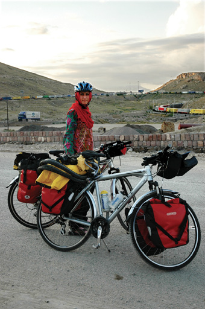

İRAN — PAKİSTAN, 22 TEMMUZ

Türkiye - İran sınırı
İpek yolunda artık atlar ve develer görülmüyor, fakat “demir atlar” hala mevcut.
İran sınırından önceki son şehir, Zahedan. Dağcı arkadaşımız Rigi’nin yardımıyla bulduğumuz peykanla sınıra doğru gidiyoruz. Taftan çölünün İran tarafındayız. Sınıra kadar 60 km var. Bugün karşı tarafa geçebilmeyi umuyoruz. Toz fırtınaları içinde ulaştığımız sınırda, dış kapıların kapalı olduğunu görüyoruz. Çare yok, yarın geçeceğiz sınırı. Taksici kendi kasabasına gitmemizi ve onun evinde konaklamamızı teklif ediyor. Sabah bizi geri getirecekmiş. Bahsettiği kasabayı bilmediğim gibi, adama da çok güvenmiyorum. Endişe edilecek bir durum yok elbette. Çünkü Rigi burada tanınan bir dağcı, onun arkadaşları olarak her zaman güvendeyiz. Teklifi kabul etmiyoruz. Ana giriş kapısının çevresinden dolaşıp küçük ve gizli diyebileceğim bir kapıdan geçerek, hapishane gibi dışarıya kapatılmış sınır bölgesinin içine giriyoruz. Rüzgâr esmeye devam ediyor. Ortalıkta ikimizin ve yanımızda yürüyen taksicinin dışında sadece kum taneleri var. Bu belki yerli halka göre fırtına değil ama ben konuşmakta ve yürümekte bile zorlanıyorum. Her tarafımıza kum doluyor. Çöl adamlarının neden gözünün, burnunun kapalı olduğu anlaşılıyor. Tüm bunlar yetmezmiş gibi bisikletin arka bagajı da yerinden çıkıyor. Peykana binmemizin sebebi de kadro kulağının yerinden çıkmasıydı. Bir lastikle tutturuyorum. Pakistan tarafına geçiş yapmamızın mümkün olmadığını öğreniyoruz. Zahedan’a geri gitmektense burada kalalım diye düşünüyoruz. Burada inşaat halinde otel-lokanta şeklinde bir yer varmış. Taksiciyle oraya girip bakıyoruz. Lokantada çalışanlardan birisi Azeri. Gece burada kalmak konusunda konuşuyoruz onunla. Başka hiç müşteri yok. Sanıyorum ki kilometrelerce alan içindeki tek kadın İnci. Kapısı kilitlenebilen bir oda ayarlıyoruz. Dışarı çıkıp taksiciyi gönderiyorum. Bisikletleri de odaya taşıyorum. Lokantada pek bir şey kalmamış. Aslında burası açık bile değil. Sadece reçel buluyorum, biraz da ekmekle mis gibi bir akşam yemeğine dönüşüyor.
Rüzgâr iyice hızlanıyor. Buna fırtına diyebiliriz artık. Odanın penceresinde perde yok, camlara çarşaf geriyoruz. Camlardan kum giriyor içeriye. Her yer kum zaten. Yerdeki halıdan birkaç kilo kum çıkacağına iddiaya girebilirim. Yataklara kendi tulumlarımızı seriyoruz. Pakistan sınırına 100 metre uzakta yarı uyur yarı uyanık bir gece bizi bekliyor. Uyusak iyi olur. Yarın çölden, hem de Afganistan sınırına yakın topraklardan geçiş bizi bekliyor. Uyusak buradaki şartlardan daha kötü bir kâbus görmeyeceğiz zaten.
Sabah uyanıyoruz, rüzgâr durmuş, akşamüstü girdiğimiz bu yer gündüz daha korkunç görünüyor gözüme. Burada kalmak ne akıldı ama. Sabah lokantada çorba buluyoruz. Sonra sınıra ilerliyoruz. Burada çekim yapabilsem harika olurdu. Ama askerler Türkiye-İran sınırındakinden daha sert bakıyorlar. Makinenin olduğu çantaya elimi bile süremiyorum. Çıkış mühürlerimizi alıyoruz. Bisikletleri kontrol binasına sokmamıza gerek yok diyorlar ama sonra nedense vazgeçiyorlar. Biraz tedirgin davranıyor olmalıyız. Aslında kendimizi sıktıkça daha zorlaştırıyoruz işleri. Yine merdiven indir kaldır. Neyse en büyük korkum gerçekleşmiyor. Bazı bisikletçilere, buradan geçerken, bagajlarındaki minik dikiş setlerinin içini dahi açtırmışlar. Kırılan bagajı da onarıyorum bu arada.
Ben bunu yaparken beni kontrol edermiş gibi bakan askerlerden birisi hafif bir selam veriyor. Ben de emin olmasam da başımla selam veriyorum. Bu birkaç askerin yanından geçtikten sonra Pakistan’a geçiyoruz. İran tarafında beton binalar ve en azından tabelalar ile tuvalet vardı. Pakistan tarafında basit bir bina içinde yapılıyor işlemler. Ne bir tabela ne bir işaret var. Çok uzun bir sıraya girmiş Pakistanlılar. Kadın ve erkekler ayrı ayrı olmak üzere. Ama yabancılar için ayrıcalık var. İnci bisikletleri bekliyor. Ben ne-nerede-nasıl bulmacasının içine düşmüş kobay fareleri gibiyim. Bu sırada ellerinde bez torbalar içinde paralarıyla gezinen simsarlara yakalanıyorum. Şu an ortalıktaki tek turist biziz, hepsi peşimde. Bazıları çocuk yaşta... İnci’yle telsizle konuşuyorum. Onu kadınların çoğunlukta olduğu bir yerde bıraktım. Sonunda dağınık binalardan hangisinin işlem yapılacak yer
olduğunu çözüyorum.
Tam anlamıyla Doğu’dayız artık. Zaman mekân birbirine girmiş durumda. Her yer kum içinde. Bisikleti ilerletmek çok zor. Türkiye İran sınırı veya bu sınırın İran tarafı gibi değil burası. Dar bir alandan geçerek ilerlemiyorsunuz. Aslında hiç kontrol edilmeden ilerleyebilirsiniz ülkenin içine doğru. İran askerlerinin olduğu kapıdan çıktıktan sonra, istediğiniz yöne doğru yürüyüp gidebilirsiniz. Çitlerle falan ayrılmış sizi bir yere doğru sevk eden düzen yok. İnanılmaz bir karmaşa var sadece. İşlem yapılan yerde, yabancı olduğunu fark ettiğim birisine yaklaşıyorum ve bir Türk genci olduğunu anlıyorum. Arada bir İnci’nin yanına gidip geliyorum. Görevlilerin İngilizcesini anlamak mümkün değil. Diğer Türk arkadaşa da sürekli oturmasını söylüyorlar. Birkaç saattir bekliyormuş ne olduğunu anlamadan. Çok ilginçtir içeride bilgisayarlar ve webcamlar var. Bisikletleri içeri sokamayacağımız için İnci dışarıda bekliyor. Kendi pasaportumdan sonra, İnci’nin pasaportunu uzatıyorum. Görevli sesini yükseltiyor, ne dediğini anlamıyorum. Bekle falan deyip İnci’yi çağırmaya gidiyorum. Ben bisikletleri bekliyorum İnci içeri gidiyor ve çıkıyor. Diğer Türk arkadaş otobüs alanına da gelemediğine göre, sanırım o gün geçemiyor sınırı. Ben biraz ötedeki otobüs gördüğüm yere doğru ilerliyorum kumların içinden. İki Çek genciyle tanışıyoruz. Onların yaptıkları pazarlığa ben de katılıyorum. Otobüs (kamyondan bozma bir şey) şoförünü fiyat konusunda ikna etmeye çalışıyoruz. Geri dönüyorum, bir süre İnci’yi arıyorum. Bu sırada İnci’yi gümrük binasına çağırmışlar. Bu da başka bir tek katlı yapı işte. Kumda ilerletmek çok zor olduğu için bisikletleri de askerler taşımış. İşte güzel kıyafetli Pakistan askerleri. Ben de yanlarına gidiyorum. İnci’ye çay ısmarlamışlar. Amaçları biraz sohbet etmek. Hafif yaşlıca olan, göğsünde ve omzunda çok miktarda işaret ve madalyaları bulunan “Amca bey” bizi
çok takdir ediyor. İşlemlerimizi hemencecik hallediyorlar.
İşte Pakistan’dayız. Pek de pak görünmeyen Pakistan’da… Her yer toz toprak ve çöp içinde. Pakistan sınırı Pakistan hakkında yeteri kadar fikir veriyor gibi.